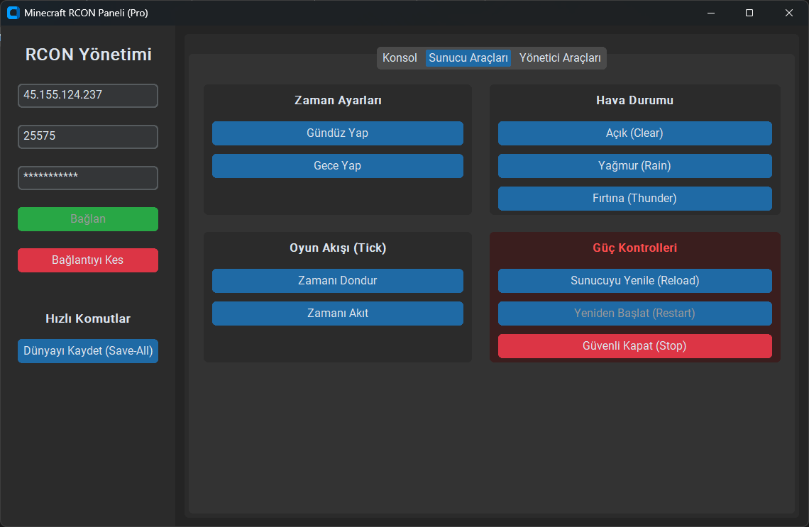

Karanlık tema destekli, çapraz platform ve güvenli RCON arayüzü. Komut yazmaktan daha fazlasını yapın.

Non-blocking UI ve asenkron ağ iş parçacıkları sayesinde paneli kullanırken donma veya kilitlenme yaşamazsınız.
Açılır oyuncu listeleri, 'Cezalandırıcı' sopa verme butonu ve tek tuşla devasa Bedrock Event Alanı inşası.
Windows, macOS ve Linux ile tam uyumlu. GitHub Actions üzerinden sizin için derlenmiş hazır çalıştırılabilir (exe) dosyalar.
Vanilla, Spigot, Paper veya Purpur altyapılarını otomatik tanır. Desteklenmeyen komutları size göstermez bile.
1. GitHub Depomuzun Actions veya Releases sekmesinden MCRconPanel.exe dosyasını indirin.
2. İndirdiğiniz dosyaya çift tıklayarak anında çalıştırın. Kurulum gerektirmez, tamamen taşınabilirdir.